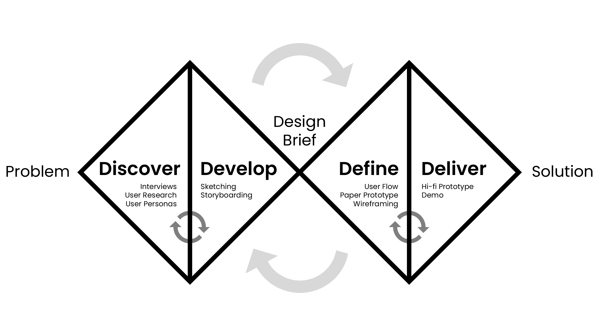

Sketching
To start brainstorming ways of tackling these problems, I quickly sketched 32 different potential solutions. These ranged from physical products, to simple routines to mitigate patients' issues.

My Role:
Ix Designer
UI/UX
UX Researcher
Team:
4 members
Duration:
12 weeks
Tools:
Figma
Adobe Illustrator
Miro
Invision
When physical or occupational therapy patients leave the hospital, they don’t always know what exercises to do or when and how to do them. Patients need guidance in ensuring they are following proper form and schedule, especially being away from constant surveillance of a PT/OT.
Currently, patients have the option of visiting their PT/OT in person during appointments, but this may not always be accessible due to physical convenience or financial constraints. There are also existing videos online that help with various exercises, but without the ability to offer and receive feedback in live time, both doctors and patients have no way of knowing if such exercises are being performed correctly, which risks causing more harm than help.
❇️ = flows that I took leadership on
Daily Overview
On the home page, users can view their exercises for the day as well as for the coming days, and the time they will take to complete along with their intensity levels. The home page also displays a daily affirmation to motivate the user and keep them encouraged.
❇️ AI-Guided PT Routines
Upon selection, users can then click to get started. They set up the phone so that the AR/AI can track their movements, and follow along with the demo to do their exercises The AI will correct their form if necessary. They then move onto the next exercise until complete.
❇️ Rate Your Workout
At the end of their exercises, users fill out a rating form and pain log, which offers a place to rate how easy or hard the exercises were, if there was any pain and where it was and how painful, and an option to leave any comments for the user’s physical therapist.
Review Your Progress
The progress tracking page displays how far along users are in their week, how long they spend each day doing exercises, their form adherence level, and a few reminders to improve their progress. They can also look through their past exercises via calendar or list view, and see their individual progress for each day.
We followed the Double Diamond framework shown below as we researched, designed, and iterated.
Our team conducted interviews to get a sense of the problems current and former physical therapy patients experienced in terms of completing at-home exercises. Upon analyzing these interviews, there was a pattern of three main pain points:
Using this information about our target audience, we created a set of user personas and scenarios.
To start brainstorming ways of tackling these problems, I quickly sketched 32 different potential solutions. These ranged from physical products, to simple routines to mitigate patients' issues.
Creating storyboards for potential situations using the sketches as an outline provided a visual narrative for our team's scenarios.
James' AI Physical Therapist
Tara's Exercise Planning
We created a visual mapping of the various flows that users will take through the system, taking into consideration the flow between the different screens, and the different paths users might take.
I created and tested a paper prototype(watch video) of some screens and interactions involving an AR/VR feature.

After performing a usability inspection on the paper prototype, the team created low-fidelity wireframes. I focused on wire-framing the AR/VR feature, and the Ratings page.
Our wireframes were then translated into the first version of an interactive high-fidelity prototype. This prototype went through a few rounds of usability testing, where our team logged the usability defects and made iterative improvements. Below is an example of a usability log for P1.

We created a design system to maintain consistency through the app. The color scheme, typography, and use of emojis makes doing physical therapy exercises more exciting, and the app feels a little more personal than typical in the PT space.
We are designing for the user - not for the team.üë§
Going into initial ideation of this project, I had several assumptions about the needs and wants of physical therapy patients - most of which were disproven through interviews! For example, a feature we thought would be of great need was a community aspect to patient care. However, every single interview participant expressed a strong aversion, and actually did not want much interaction with anyone other than their PT. We might have thought this because of a lack of social interaction due to the global pandemic. Or maybe, it was because we overestimated the role that physical therapy plays in a patient's everyday. Either way, it is important that we do not impose biases or let them reflect in the design. User interviews and user personas played a sizable role in keeping our biases out of the process.
Accessibility is very important! ♿
The first round of usability testing revealed a large issue in the UI. Many older participants reported being unable to read the text, or interpret symbols, due to color contrast or the size of the text. The majority of physical therapy patients fall into the 65+ age category. On top of that, given that the application's main selling point is AR/VR, usability for senior citizens should be heavily emphasized so that they can feel comfortable adopting this new-age technology into their routines. Once realized, I was able to make several changes to both text and color that eased a lot of of the slip-ups that users were experiencing.